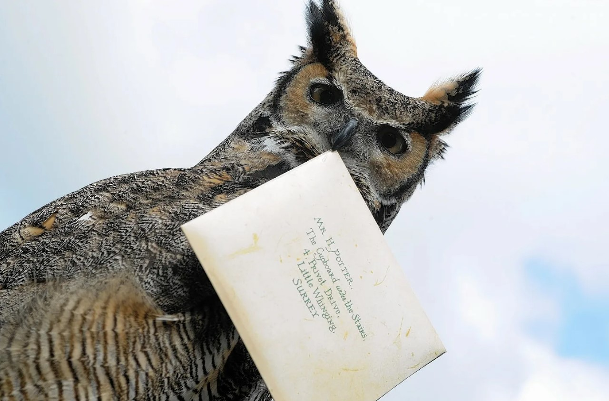
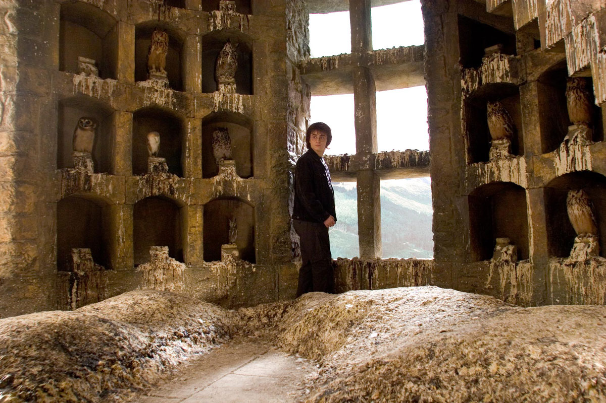
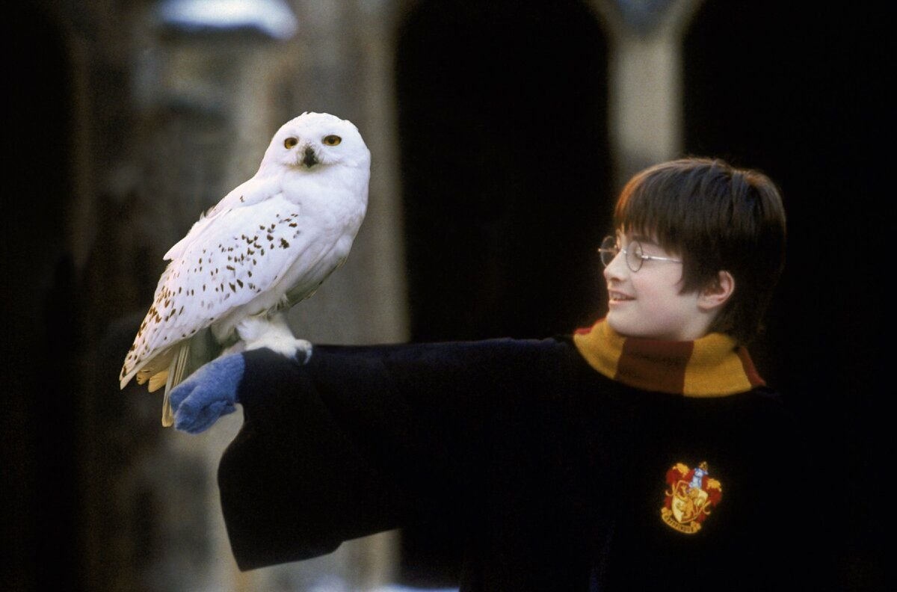
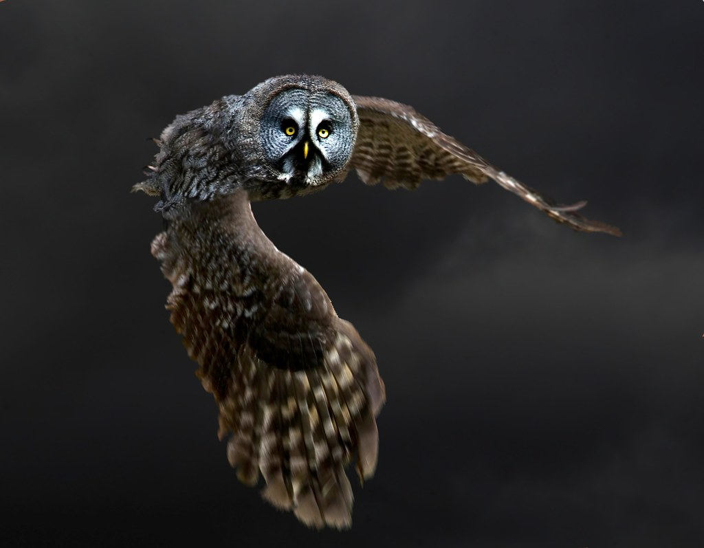
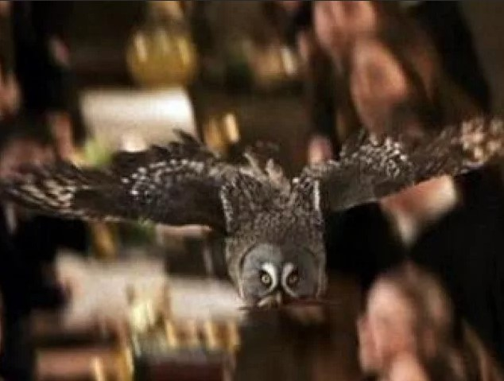
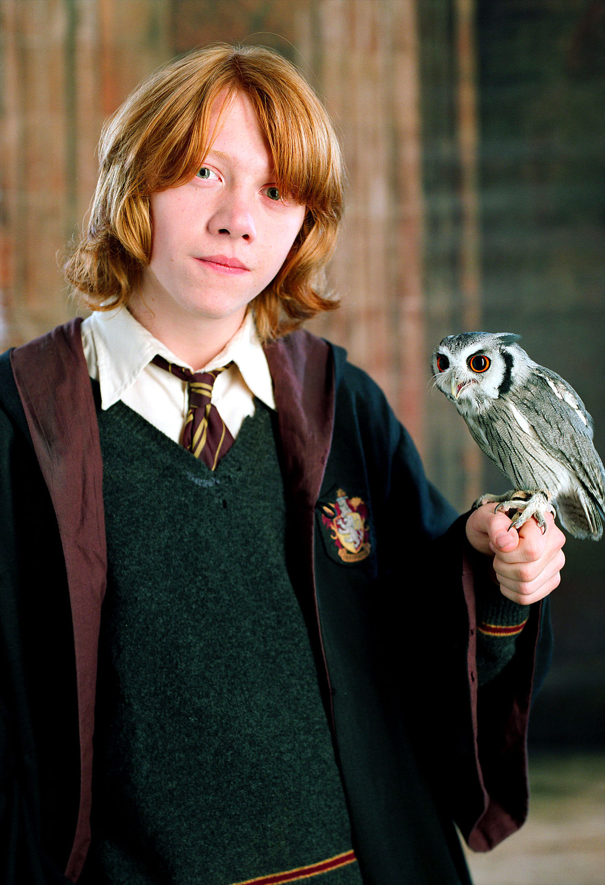

Совиная почта
Совиная почта (или почтовые совы) — почтовая служба в мире магов. Отличается тем, что письма, газеты, различные уведомления и посылки разносят совы. При этом совы могут быть как частные (принадлежащие отдельным волшебникам), так и общественные (принадлежащие организациям).
Применение сов
В Хогвартсе совы живут в совятне в Западной башне и доставляют почту студентам один раз в день за завтраком, хотя более срочные сообщения часто доставляются в общежития.
В Хогвартсе также есть несколько школьных сов, которыми могут пользоваться ученики, у которых нет совы. Гарри несколько раз использовал школьных сов, когда ему нужно было связаться с Сириусом, не привлекая внимания. Похоже, что эти совы иногда используются даже для общения в школе, например, когда Хагрид отправляет записку Гарри в конце своей первой недели в Хогвартсе.
Начиная с пятого курса Гарри , все совы посты в Хогвартсе обыскивались и проверялись в качестве меры предосторожности. Первоначально Министерство магии и Долорес Амбридж считали это властным методом контроля , но как только возвращение Волдеморта стало достоянием общественности, это было широко принято.
Совы также используются для институциональных доставок: впервые мы видим сову, доставляющую доставку, когда она прибывает с «Ежедневным пророком» Хагрида в хижину на скале. В этом случае у совы был мешочек, который она использовала для сбора денег Хагрида.
Совы также использовались некоторыми предприятиями для службы заказа сов, чтобы доставлять товары. Эта услуга находит широкое применение, когда приближается его шестой год на рождественской вечеринке Slug Club , и девочки покупают любовные зелья у Wizard Wheezes Уизли через Службу заказа совы Фреда и Джорджа. Фред Уизли и Джордж Уизли вели большую часть своих деловых операций для Weasley's Wizard Wheezes через службу заказа сов.
В 1995 году британское министерство магии приняло несколько законов о цензуре совиных постов.
Почтовые совы довольно умны и обычно могут найти получателя своей почты практически без указания направления.
Совы используют некоторую магию для поиска получателей; Хедвиг , например, может легко найти Сириуса Блэка, когда он скрывается от Министерства магии , хотя авроры не могут этого сделать. Хедвиг также регулярно выслеживала Гарри в Хогвартсе, в Гриффиндорской башне или даже в его классах, и Пигвиджен успешно доставляет письмо Гарри, пока он находится в движущемся Хогвартс-экспрессе . Однако волшебники не могут послать сову тому, кого они хотят найти, а затем «следовать» за совой, чтобы узнать местонахождение этого человека.
Частные почтовые совы
Чаще всего используются личные совы, живущие у волшебников и разносящие только их почту:
- Букля — сова Гарри Поттера, 
- Гермес — сова Перси Уизли, 
- Стрелка — сова семейства Уизли, 
- Сычик — сова Рона Уизли. 
Общественные совы
- Совы Министерства магии
- Совы Школы чародейства и волшебства Хогвартс. Живут в совятне замка.
- Совы служб доставки, вероятно, общественная почта волшебников:
- Доставка заказанных книг из магазинов покупателям.
- Доставка заказанных товаров («Всевозможные волшебные вредилки», например).
- Доставка подписной периодики.
Почтовая служба других стран
Для доставки сообщений можно использовать других птиц. Сириус Блэк , скрываясь, отправил неуказанных тропических птиц в качестве носителей сообщений во время общения с Гарри Поттером . Это привело Гарри к предположению, что Сириус скрывался в более теплой среде, чем Англия. Однако преобладающей птицей, используемой для обмена сообщениями, была сова . У маглов есть своя собственная форма почты, и поэтому они не используют сов, и они не знали, что совы или другие птицы могут использоваться для переписки.